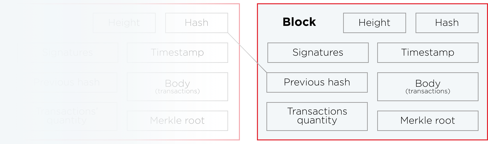
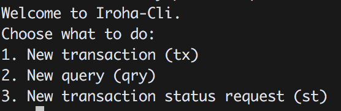
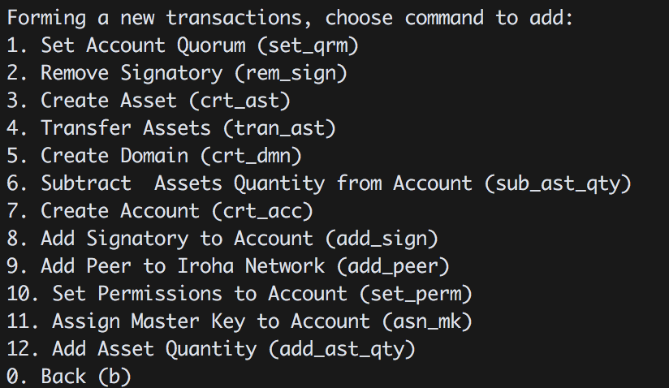
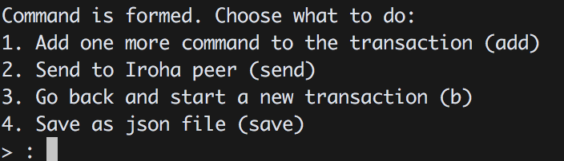
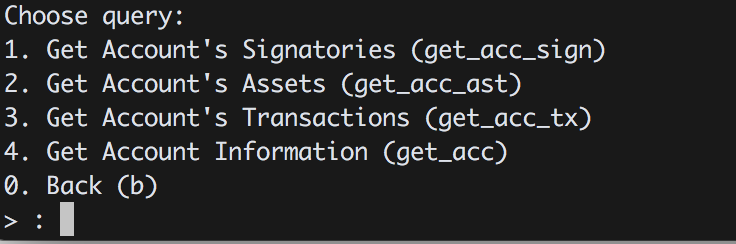
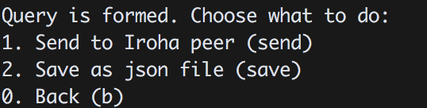

Overview
Welcome to the Hyperledger Iroha API docs!
Elevator pitch for Iroha
The system is a distributed ledger platform, capable of storing all history of state-changing actions (called transactions) in immutable linear history (called blockchain). The system is intended to be used in enterprise or between untrusted agents as private chain platform, but not as a public chain — key difference is that not everyone is allowed to store the whole history. A subset of users can only query some data (perform a query) if their accounts have required permissions, while others maintain a peer (Iroha is a peer network), which stores history.
Reliability and security are provided with cryptographic capabilities and Byzantine Fault Tolerant consensus algorithm. The system is targeted to environments, where client applications are very diverse (desktop, various mobile platforms), and peer hardware varies from embedded systems to enterprise-class servers.
Purpose of the docs you are reading
The documentation describes the endpoints for users to send transactions to peer network, containing one or many commands to perform allowed actions in the system, and also make queries to know the current state. Also the documentation contains explanation how to build the system, how to run it and other applicable tutorials.
The API is organized around protobuf format, as Iroha is using gRPC in transport level. Iroha CLI and block store use JSON format to provide developer-friendly experience for contributors. Feel free to check both sections for protobuf and JSON while exploring docs.
Try it yourself
To try out a basic API functionality, do the following:
- Run the system (
irohaddaemon) on a single node. - Run iroha-cli in interactive mode. Command Line Interface app is a client, showing the capabilities of the system.
- Select a necessary action to perform. As you created an initial configuration in genesis block — use the account from genesis block to send transaction or make a query.
- When you fill all the necessary details for commands and formed a transaction; or if you formed a query — you are ready to send it to Iroha peer. Tell the network address and port (by default it is 50051).
Build
To launch Iroha peer network, an executable daemon should be launched. Currently we support Unix-like systems (we are basically targeting at popular Linux distros and macOS), while Windows remains to be a challenge for community and we don't have any plans to support it so far.
If you happen to have Windows or you don't want to spend time figuring out troubles with dependencies on your system — please use Docker environment, made with care for new contributors of Iroha (and hostages of Windows).
Docker
Please, use latest available docker daemon and docker-compose. If you have troubles launching Docker container — it is likely that you have an outdated version.
Clone Git repository
Clone Iroha repository in any convenient folder on your machine.
Cloning Iroha
git clone -b develop --depth=1 \
https://github.com/hyperledger/iroha
How to run development environment
Run the script run-iroha-dev.sh, contained in the folder scripts: sh .../iroha/scripts/run-iroha-dev.sh
After you execute this script, following things happen:
- The script checks if you don't have containers with Iroha already running. It ends up with reattaching you to interactive shell upon succesful completion.
- The script will download iroha-docker-develop, redis and postgres images. Iroha image contains all development dependencies, and is based on top of ubuntu:16.04.
- Three containers are created and launched.
- The user is attached to the interactive environment for development and testing with
irohafolder mounted from the host machine. Iroha folder is mounted to/opt/irohain Docker container.
Build project and run tests
Build
cmake -H. -Bbuild;
cmake --build build -- -j$(nproc)
Run shell commands from "Build" section on the right. Built binaries (irohad and iroha-cli) will be in ./build/bin directory.
After you built the project — please run tests to check the operability of the daemon.
Cmake parameters
We use CMake to build platform-dependent build files. It has numerous of the flags for configuring the final build. Note that beside the listed params cmake's vars can be useful as well. Also as long as this page can be deprecated (or just not complete) you can browse custom flags via cmake -L, cmake-gui, or ccmake.
Main params
| Parameter | Possible values | Default | Description |
|---|---|---|---|
| TESTING | ON/OFF | ON | Enables or disables build of the tests |
| BENCHMARKING | ON/OFF | OFF | Enables or disables build of the benchmarks |
| COVERAGE | ON/OFF | OFF | Enables or disables coverage |
| SWIG_PYTHON | ON/OFF | OFF | Enables or disables libraries and native interface bindings for python |
| SWIG_JAVA | ON/OFF | OFF | Enables or disables libraries and native interface bindings for java |
Packaging specific params
| Parameter | Possible values | Default | Description |
|---|---|---|---|
| ENABLE_LIBS_PACKAGING | ON/OFF | ON | Enables or disables all types of packaging |
| PACKAGE_ZIP | ON/OFF | OFF | Enables or disables zip packaging |
| PACKAGE_TGZ | ON/OFF | OFF | Enables or disables tar.gz packaging |
| PACKAGE_RPM | ON/OFF | OFF | Enables or disables rpm packaging |
| PACKAGE_DEB | ON/OFF | OFF | Enables or disables deb packaging |
Add to irohad and iroha-cli to path (optional)
export PATH=.../iroha/build/bin:$PATH
How to run tests method #1
cmake --build build --target test
How to run tests method #2
ctest . # in build folder
Execute iroha-cli with irohad running
Execute run-iroha-dev.sh again to attach to existing container.
Linux or macOS
Launching Docker and Postgres in Docker
docker run --name some-redis \
-p 6379:6379 \
-d redis:3.2.8
docker run --name some-postgres \
-e POSTGRES_USER=postgres \
-e POSTGRES_PASSWORD=mysecretpassword \
-p 5432:5432 \
-d postgres:9.5
To launch Iroha daemon, running postgres and redis services are required. You may launch them on your local machine, or use docker containers, as provided on the right side.
Linux (debian-based)
To install dependencies, clone, and build the project, please use this code:
Outdated dependencies
In case that some dependencies are outdated in apt, you are advised to use following sources to install dependencies:
Boost
To install Boost libraries (libboost-all-dev), use current release from Boost webpage, or use debian repository for latest library.
The only dependencies are system and filesystem, so use ./bootstrap.sh --with-libraries=system,filesystem when you are building the project.
CMake
To install CMake tool (cmake), use latest release from CMake webpage.
macOS
macOS brew
brew tap soramitsu/iroha
brew install iroha
To install dependencies, clone, and build the project, please use this code:
Run the daemon (irohad)
Create genesis block
A genesis block is the first block in the chain.
Important: each peer in the initialized network should have exactly the same genesis block, so create it once and distribute across peers. This block may have any data, as no-one validates it in the peer network.
Using iroha-cli
Create list of peers
Create peers.list file containing network addresses of peers' internal ports in the network (10001 by default) a single peer address goes on new line. If you want to run Iroha on single peer, it is sufficient to mention only localhost:
$ echo 'localhost:10001' > peers.list
As an example, for 4 peers the file will look like the following:
- 10.128.13.1:10001
- 10.128.13.2:10001
- 10.128.13.3:10001
- 10.128.13.4:10001
Use iroha-cli
Generate genesis block using iroha-cli (see shell command on the right side).
Iroha-cli tool is used to generate keypairs for every peer, mentioned in the peers list. This is done only for convenience — in production environment please consider using manual or more trusted approach.
Generating genesis block
$ iroha-cli --genesis_block \
--peers_address peers.list
Executing this command will result in generation of following files:
admin@test.privandadmin@test.pub— keypair for user with admin and asset creator rightstest@test.privandtest@test.pub— keypair for user with user rightsnode0.privandnode0.pub— keypair for first node, mentioned in thepeers.list- If mentioned more than one peer address in
peers.list:nodeX.privandnodeX.pub— keypair for #X node, mentioned in the peers.list, (where X is starts from 1) genesis.block— genesis block itself
Manually
Follow JSON structure of the block, as it is reflected in JSON schema for the block.
Prepare configuration file
Configuration file keeps information about storage credentials and irohad parameters:
| Parameter | Type | Meaning |
|---|---|---|
| block_store_path | string | Path to store blocks of committed transactions (flat file storage) |
| torii_port | integer | Port to access iroha node gRPC (default 50051) |
| internal_port | integer | Port for communication between ordering service, YAC consensus and block loader for synchronization (default 10001) |
| pg_opt | string | Postgres credentials |
| redis_host | string | Redis host IP address |
| redis_port | integer | Port to access redis storage |
| max_proposal_size | integer | Maximum size of created proposals |
| proposal_delay | integer | The period of time (in ms) used to prepare proposal of transactions |
| vote_delay | integer | The period of time (in ms) of spreading vote across the network |
| load_delay | integer | The period of time (in ms) between synchronizations between peers |
Example:
Launch irohad
To launch irohad daemon, following parameters must be passed:
| Parameter | Meaning |
|---|---|
| config | configuration file, containing postgres, and redis connection, and values to tune the system |
| genesis_block | initial block in the ledger |
| keypair_name | private and public key file names without file extension. Used by peer to sign the blocks |
Use this command to launch iroha:
irohad --config example/config.sample --genesis_block example/genesis.block --keypair_name example/node0
Block structure

In order to understand contents of the block better, this section tells about its parts:
Outside payload
- hash — SHA3-512 hash of block protobuf payload
- signatures — signatures of peers, which voted for the block during consensus round
Inside payload
- height — a quantity of blocks in the chain up to the block
- timestamp — unix time (in millis) of block forming by a peer
- body — transactions, which successfully passed validation and consensus step
- transactions quantity
- previous hash of block
Transactions
Transaction
message Transaction {
Payload payload = 1;
repeated Signature signature = 2;
}
{
/* Transaction */
"signatures": array of objects,
"created_ts": int(13),
"creator_account_id": string(?),
"tx_counter": int,
"commands": array of objects
}
A transaction is a state-changing set of actions in the system. When a transaction passes validation and consensus stages, it is written in a block and saved in immutable block store (blockchain).
Transactions consist of commands, performing an action over an entity in the system. The entity might be an account, asset, etc. — more in entity-relationship model page.
Communication between Iroha peer and a client application is maintained via gRPC framework. Client applications should follow described protocol and form transactions accordingly to the description below.
Transaction structure
Each transaction consists of two parts:
- Payload
- Signature
Payload
message Payload {
repeated Command commands = 1;
string creator_account_id = 2;
uint64 tx_counter = 3;
uint64 created_time = 4;
}
{
"commands": [
{
"command_type": string(?),
/* other command-specific fields */
}
],
"creator_account_id": string(?),
"tx_counter": int,
"created_ts": int(13)
}
Signature
message Signature {
bytes pubkey = 1;
bytes signature = 2;
}
{
"signatures": [
{
"pubkey": string(64),
"signature": string(128),
}
], …
}
Payload stores all transaction fields, except signatures:
- Time of creation (unix time, in milliseconds)
- Account ID of transaction creator (username@domain)
- Transaction counter. It counts how many times transaction creator sent transactions in total. Counter is used to prevent replay attack, and is formed on client side
- Repeated commands which are described in details in commands section
Signatures contain one or many signatures (ed25519 public key + signature):
Transaction statuses
The current version of Iroha peer follows client pull principle for networking. It means that client should be proactive and request the state of a transaction from a peer.
This section describes the set of states and matches them with transaction lifecycle.

NOT_RECEIVED: the peer does not have this transaction.STATELESS_VALIDATION_FAILED: the transaction was formed with some fields, not meeting constraints. This status is returned to a client, who formed transaction, right after the transaction was sent.STATELESS_VALIDATION_SUCCESS: the transaction has successfully passed stateless validation. This status is returned to a client, who formed transaction, right after the transaction was sent.STATEFUL_VALIDATION_FAILED: the transaction has commands, which violate validation rules, checking state of the chain (e.g. asset balance, account permissions, etc.)STATEFUL_VALIDATION_SUCCESS: the transaction has successfully passed stateful validation.IN_PROGRESS: the transaction was received, but not yet processed by stateless validatorCOMMITTED: the transaction is the part of a block, which gained enough votes and is in the block store at the moment.
Commands
A command changes the state, called World State View, by performing an action over an entity (asset, account) in the system. Any command should be included in a transaction to perform an action.
Add asset quantity
Purpose
The purpose of add asset quantity command is to increase the quantity of an asset on account of transaction creator. Use case scenario is to increase the number of mutable asset in the system, which can act as a claim on a commodity (e.g. money, gold, etc.)
Structure
message AddAssetQuantity {
string account_id = 1;
string asset_id = 2;
Amount amount = 3;
}
message uint256 {
uint64 first = 1;
uint64 second = 2;
uint64 third = 3;
uint64 fourth = 4;
}
message Amount {
uint256 value = 1;
uint32 precision = 2;
}
{
"commands": [
{
"command_type": "AddAssetQuantity",
"account_id": "test@test",
"asset_id": "coin#test",
"amount": {
"value": string,
"precision": int
}
}
], …
}
| Field | Description | Constraint |
|---|---|---|
| Account ID | account id in which to add asset | account_name@domain |
| Asset ID | id of the asset | asset#account |
| Amount | positive amount of the asset to add | > 0 |
Validation
- Asset and account should exist
- Added quantity precision should be equal to asset precision
- Creator of transaction should have role which has permissions for issuing assets
- Creator of transaction adds account quantity to his/her account only
Add peer
Purpose
The purpose of add peer command is to write into ledger the fact of peer addition into the peer network. After the peer was added, consensus and synchronization components will start using it.
Structure
message AddPeer {
Peer peer = 1;
}
message Peer {
string address = 1;
bytes peer_key = 2;
}
{
"commands": [
{
"command_type": "AddPeer",
"peer": {
"address": "192.168.1.1:50001",
"peer_key": string(64)
}
},
], …
}
| Field | Description | Constraint |
|---|---|---|
| Address | resolvable address in network (IPv4, IPv6, domain name, etc.) | should be resolvable |
| Peer key | peer public key, which will be used in consensus algorithm to sign-off vote, commit, reject messages | ed25519 public key |
Validation
- Creator of the transaction has a role which has CanAddPeer permission.
- Such network address has not been already added.
Add signatory
Purpose
The purpose of add signatory command is to add an identifier to the account. Such identifier is a public key of another device or a public key of another user.
Structure
message AddSignatory {
string account_id = 1;
bytes public_key = 2;
}
{
"commands": [
{
"command_type": "AddSignatory",
"account_id": "test@test",
"public_key": string(64)
}
], …
}
| Field | Description | Constraint |
|---|---|---|
| Account ID | Account to which to add signatory | account_name@domain |
| Public key | Signatory to add to account | ed25519 public key |
Validation
Two cases: Case 1. Transaction creator wants to add signatory to his or her account, having permission CanAddSignatory Case 2. CanAddSignatory was granted to transaction creator
Append role
Purpose
The purpose of append role command is to promote an account to some created role in the system, where role is a set of permissions account has to perform an action (command or query).
Structure
message AppendRole {
string account_id = 1;
string role_name = 2;
}
{
"commands": [
{
"command_type": "AppendRole",
"account_id": "takemiya@test",
"role_name": "Administrator"
}
], …
}
| Field | Description | Constraint |
|---|---|---|
| Account ID | id or account to append role to | already existent, account_name@domain |
| Role name | name of already created role | already existent, [A-Za-z0-9_]{1,7} |
Validation
- Role should exist in the system
- Transaction creator should have permissions to append role (CanAppendRole)
- Account, which appends role, has set of permissions in his roles bigger than or equal to the size of permission set of appended role.
Create account
Purpose
The purpose of create account command is to make entity in the system, capable of sending transactions or queries, storing signatories, personal data and identifiers.
Structure
message CreateAccount {
string account_name = 1;
string domain_id = 2;
bytes main_pubkey = 3;
}
{
"commands": [
{
"command_type": "CreateAccount",
"account_name": "makoto.takemiya",
"domain_id": "test",
"main_pubkey": string
}
], …
}
| Field | Description | Constraint |
|---|---|---|
| Account name | domain-unique name for account | A string in domain-name syntax defined in RFC1035. An account name is a list of labels separated by a period .. A label is a sequence of characters in [a-zA-Z-]. The length of a label must not exceed 63 characters |
| Domain ID | target domain to make relation with | should be created before the account, [0-9A-Za-z]{1,9} |
| Main pubkey | first public key to add to the account | ed25519 public key |
Validation
- Transaction creator has permission to create account
- Domain, passed as domain_id, has already been created in the system
- Such public key has not been added before as first public key of account or added to multi-signature account
Create asset
Purpose
The purpose of сreate asset command is to create a new type of asset, unique in a domain. An asset is a countable representation of a commodity.
Structure
message CreateAsset {
string asset_name = 1;
string domain_id = 2;
uint32 precision = 3;
}
{
"commands": [
{
"command_type": "CreateAsset",
"asset_name": "usd",
"domain_id": "test",
"precision": "2"
}
], …
}
| Field | Description | Constraint |
|---|---|---|
| Asset name | domain-unique name for asset | [A-Za-z0-9]{1,9} |
| Domain ID | target domain to make relation with | should be created before the asset, [A-Za-z0-9]{1,9} |
| Precision | number of digits after comma/dot | 0 <= precision <= uint32 max |
Validation
- Transaction creator has permission to create assets
- Asset name is unique per domain
Create domain
Purpose
The purpose of create domain command is to make new domain in Iroha network, which is a group of accounts.
Structure
message CreateDomain {
string domain_id = 1;
string default_role = 2;
}
{
"commands": [
{
"command_type": "CreateDomain",
"domain_id": "test2",
"default_role": "User"
}
], …
}
| Field | Description | Constraint |
|---|---|---|
| Domain ID | ID for created domain | unique, [0-9A-Za-z]{1,9} |
| Default role | role for any created user in the domain | one of the existing roles |
Validation
- domain id is unique
- Account, who sends this command in transaction, has role with permission to create domain
- Role, which will be assigned to created user by default
Create role
Purpose
The purpose of create role command is to create new role in the system from the set of permissions. Combining different permissions into roles, maintainers of Iroha peer network can create customized security model.
Structure
message CreateRole {
string role_name = 1;
repeated string permissions = 2;
}
{
"commands": [
{
"command_type": "CreateRole",
"role_name": "MoneyCreator",
"permissions": [
"CanAddAssetQuantity",
…
]
}
], …
}
| Field | Description | Constraint |
|---|---|---|
| Role name | name of role to create | [A-Za-z0-9_]{1,7} |
| Permissions | array of already existent permissions | set of passed permissions is fully included into set of existing permissions |
Validation
- Set of passed permissions is fully included into set of existing permissions
Detach role
Purpose
The purpose of detach role command is to detach a role from the set of roles of an account. By executing this command it is possible to decrease the number of possible actions in the system for the user.
Structure
message DetachRole {
string account_id = 1;
string role_name = 2;
}
{
"commands": [
{
"command_type": "DetachRole",
"account_id": "test@test",
"role_name": "user"
}
], …
}
| Field | Description | Constraint |
|---|---|---|
| Account ID | ID of account where role will be deleted | already existent, account_name@domain |
| Role name | detached role | existing role |
Validation
- Role exists in the system
- Account has such role
Grant permission
Purpose
The purpose of grant permission command is to give another account rights to perform actions over the account of transaction sender (give someone right to do something with my account).
Structure
message GrantPermission {
string account_id = 1;
string permission_name = 2;
}
{
"commands": [
{
"command_type": "GrantPermission",
"account_id": "takemiya@soramitsu",
"permission_name": "CanAddAssetQuantity"
}
], …
}
| Field | Description | Constraint |
|---|---|---|
| Account ID | id of account whom rights are granted | already existent, account_name@domain |
| Permission name | name of granted permission | permission is defined |
Validation
- Account exists
- Transaction creator is allowed to grant this permission
Remove signatory
Purpose
Purpose of remove signatory command is to remove public key, associated with an identity, from an account
Structure
message RemoveSignatory {
string account_id = 1;
bytes public_key = 2;
}
{
"commands": [
{
"command_type": "RemoveSignatory",
"account_id": "takemiya@test",
"public_key": string(64)
}
], …
}
| Field | Description | Constraint |
|---|---|---|
| Account ID | ID of account to delete signatory from | already existent, account_name@domain |
| Public key | Signatory to delete | ed25519 public key |
Validation
When signatory is deleted, we should check if invariant of size(signatories) >= quorum holds. Signatory should have been previously added to the account
Two cases: Case 1. When transaction creator wants to remove signatory from their account and he or she has permission CanRemoveSignatory Case 2. CanRemoveSignatory was granted to transaction creator
Revoke permission
Purpose
The purpose of revoke permission command is to revoke or dismiss given granted permission from another account in the network.
Structure
message RevokePermission {
string account_id = 1;
string permission_name = 2;
}
{
"commands": [
{
"command_type": "RevokePermission",
"account_id": "takemiya@soramitsu",
"permission_name": "CanAddAssetQuantity"
}
], …
}
| Field | Description | Constraint |
|---|---|---|
| Account ID | id of account whom rights were granted | already existent, account_name@domain |
| Permission name | name of revoked permission | permission is defined |
Validation
- Transaction creator should have previously granted this permission to target account
Set account detail
Purpose
Purpose of set account detail command is to set key-value information for a given account
Structure
message SetAccountDetail{
string account_id = 1;
string key = 2;
string value = 3;
}
{
"commands": [
{
"command_type": "SetAccountDetail",
"account_id": "takemiya@soramitsu",
"key": "position",
"value": "Co-CEO"
}
], …
}
| Field | Description | Constraint |
|---|---|---|
| Account ID | id of account whom key-value information was set | already existent, account_name@domain |
| Key | key of information being set | [A-Za-z0-9_]{1,} |
| Value | value of corresponding key | - |
Validation
Two cases: Case 1. When transaction creator wants to set account detail to his/her account and he or she has permission CanSetAccountInfo Case 2. CanSetAccountInfo was granted to transaction creator
Set account quorum
Purpose
The purpose of set account quorum command is to set the number of signatories required to confirm the identity of user, who creates the transaction. Use case scenario is to set the number of different users, utilizing single account, to sign off the transaction.
Structure
message SetAccountQuorum {
string account_id = 1;
uint32 quorum = 2;
}
{
"commands": [
{
"command_type": "SetAccountQuorum",
"account_id": "takemiya@test",
"quorum": 5
}
], …
}
| Field | Description | Constraint |
|---|---|---|
| Account ID | ID of account to set quorum | already existent, account_name@domain |
| Quorum | number of signatories needed to be included with a transaction from this account | 0 < quorum < 10 |
Validation
When quorum is set, it is checked if invariant of size(signatories) >= quorum holds.
Two cases: Case 1. When transaction creator wants to set quorum for his/her account and he or she has permission CanRemoveSignatory Case 2. CanRemoveSignatory was granted to transaction creator
Subtract asset quantity
Purpose
The purpose of subtract asset quantity command is the opposite of AddAssetQuantity commands — to decrease the number of assets on account of transaction creator.
Structure
message AddAssetQuantity {
string account_id = 1;
string asset_id = 2;
Amount amount = 3;
}
message uint256 {
uint64 first = 1;
uint64 second = 2;
uint64 third = 3;
uint64 fourth = 4;
}
message Amount {
uint256 value = 1;
uint32 precision = 2;
}
{
"commands": [
{
"command_type": "SubtractAssetQuantity",
"account_id": "test@test",
"asset_id": "coin#test",
"amount": {
"value": string,
"precision": int
}
}
], …
}
| Field | Description | Constraint |
|---|---|---|
| Account ID | account id from which to subtract asset | account_name@domain |
| Asset ID | id of the asset | asset#account |
| Amount | positive amount of the asset to add | > 0 |
Validation
- Asset and account should exist
- Added quantity precision should be equal to asset precision
- Creator of transaction should have role which has permissions for subtraction of assets
- Creator of transaction subtracts account quantity in his/her account only
Transfer asset
Purpose
The purpose of transfer asset command is to share assets within the account in peer network: in the way that source account transfers assets to target account.
Structure
message TransferAsset {
string src_account_id = 1;
string dest_account_id = 2;
string asset_id = 3;
string description = 4;
Amount amount = 5;
}
{
"commands": [
{
"command_type": "TransferAsset",
"src_account_id": "takemiya@test",
"dest_account_id": "nikolai@test",
"asset_id": "coin#test",
"description": "Salary payment",
"amount": {
"int_part": 20,
"precision": 0
}
}
], …
}
| Field | Description | Constraint |
|---|---|---|
| Source account ID | ID of account to withdraw asset from | already existent, account_name@domain |
| Destination account ID | ID of account to send asset at | already existent, account_name@domain |
| Asset ID | ID of asset to use | already existent, asset_name#domain |
| Description | Message to attach to transfer | No constraints |
| Amount | amount of asset to transfer | 0 < amount < max_uint256 |
Validation
- Source account has this asset in its AccountHasAsset relation
- An amount is a positive number and asset precision is consistent with the asset definition
- Source account has enough amount of asset to transfer and is not zero
- Source account can transfer money, and destination account can receive money (their roles have these permissions)
Queries
Query structure
message Query {
message Payload {
uint64 created_time = 1;
string creator_account_id = 2;
oneof query {
GetAccount get_account = 3;
GetSignatories get_account_signatories = 4;
GetAccountTransactions get_account_transactions = 5;
GetAccountAssetTransactions get_account_asset_transactions = 6;
GetTransactions get_transactions = 7;
GetAccountAssets get_account_assets = 8;
GetRoles get_roles = 9;
GetRolePermissions get_role_permissions = 10;
GetAssetInfo get_asset_info = 11;
}
// used to prevent replay attacks.
uint64 query_counter = 12;
}
Payload payload = 1;
Signature signature = 2;
}
Each query consists of the following fields:
- Payload, which contains created time, id of account creator, query counter and a query object
- Signature, which signs payload
Payload stores everything except signatures:
- Time of creation (unix time, in milliseconds)
- Creator account_id stores account id in form username@domain
- Query counter is used to prevent replay attack and it is formed on client side
- Query object might be of any type, described below
Signatures contain one or many signatures (ed25519 pubkey + signature).
Validation
The validation for all commands includes:
- timestamp — should not be older than 24 hours from the peer's time
- signature of query creator — used for checking the identity of query creator
- query counter — checked to be incremented with every subsequent query from query creator
- roles — depending on the query creator's role, it can be applied to the same account, account in the domain, in the whole system or not allowed at all
Get account
Purpose
Purpose of get account query is to get the state of an account.
This Query returns AccountResponse, which contains array with roles of the account and Account object with following fields:
- account_id
- domain_name
- permissions object
- quorum — the quantity of signatures to pass within transaction to execute commands for this account
Structure
Query
Query
message GetAccount {
string account_id = 1;
}
{
"signature":
{
"pubkey": "…",
"signature": "…"
},
"created_ts": …,
"creator_account_id": "admin@test",
"query_counter": 1,
"query_type" : "GetAccount",
"account_id": "test@test"
}
| Field | Description | Constraint |
|---|---|---|
| Account ID | account id to request its state | username@domain |
Response
Response
message AccountResponse {
Account account = 1;
repeated string account_roles = 2;
}
message Account {
string account_id = 1;
string domain_id = 2;
uint32 quorum = 3;
string json_data = 4;
}
| Field | Description | Constraint |
|---|---|---|
| Account ID | account id | username@domain |
| Domain ID | domain of account id | [A-Za-z0-9]{1,9} |
| Quorum | number of signatories needed to sign the transaction to make it valid | integer |
| json_data | key-value information | properly formed json information |
Get signatories
Purpose
Purpose of get signatories query is to get signatories, which act as an identity of the account.
This Query returns SignatoriesResponse, which is one or many public ed25519 keys.
Structure
Query
Query
message GetSignatories {
string account_id = 1;
}
{
"signature":
{
"pubkey": "…",
"signature": "…"
},
"created_ts": …,
"creator_account_id": "admin@test",
"query_counter": 1,
"query_type" : "GetSignatories",
"account_id": "test@test"
}
| Field | Description | Constraint |
|---|---|---|
| Account ID | account id to request signatories | username@domain |
Response
Response
message SignatoriesResponse {
repeated bytes keys = 1;
}
| Field | Description | Constraint |
|---|---|---|
| Keys | an array of public keys | ed25519 |
Get account transactions
Purpose
In a case when a list of transactions per account is needed, GetAccountTransactions query can be formed.
This Query returns TransactionsResponse, which is a collection of transactions.
Structure
Query
Query
message GetAccountTransactions {
string account_id = 1;
}
{
"signature":
{
"pubkey": "…",
"signature": "…"
},
"created_ts": …,
"creator_account_id": "admin@test",
"query_counter": 1,
"query_type" : "GetAccountTransactions",
"account_id": "test@test"
}
| Field | Description | Constraint |
|---|---|---|
| Account ID | account id to request transactions from | username@domain |
Response
Response
message TransactionsResponse {
repeated Transaction transactions = 1;
}
| Field | Description | Constraint |
|---|---|---|
| Transactions | an array of transactions for given account | Committed transaction |
Get account asset transactions
Purpose
GetAccountAssetTransactions query returns all transactions associated with given account and asset
This Query returns TransactionsResponse, which is a collection of transactions.
Structure
Query
Query
message GetAccountAssetTransactions {
string account_id = 1;
string asset_id = 2;
}
{
"signature":
{
"pubkey": "…",
"signature": "…"
},
"created_ts": …,
"creator_account_id": "admin@test",
"query_counter": 1,
"query_type" : "GetAccountAssetTransactions",
"account_id": "test@test",
"asset_id": "coin#test"
}
| Field | Description | Constraint |
|---|---|---|
| Account ID | account id to request transactions from | username@domain |
| Asset ID | asset id in order to filter transactions containing this asset | asset_name#domain |
Response
Response
message TransactionsResponse {
repeated Transaction transactions = 1;
}
| Field | Description | Constraint |
|---|---|---|
| Transactions | an array of transactions for given account and asset | Committed transactions |
Get transactions
Purpose
GetTransactions is used for retrieving information about transactions, based on their hashes.
This Query returns TransactionsResponse, which is a collection of transactions.
Structure
Query
Query
message GetTransactions {
repeated bytes tx_hashes = 1;
}
{
"signature":
{
"pubkey": "…",
"signature": "…"
},
"created_ts": …,
"creator_account_id": "admin@test",
"query_counter": 1,
"query_type" : "GetTransactions",
"tx_hashes": [string(64),…]
}
| Field | Description | Constraint |
|---|---|---|
| Transactions hashes | transactions' hashes to request transactions from | (proto) array of 32 bytes, (json) 64 size of hex strings |
Response
Response
message TransactionsResponse {
repeated Transaction transactions = 1;
}
| Field | Description | Constraint |
|---|---|---|
| Transactions | an array of transactions for given account and asset | Committed transactions |
Get account assets
Purpose
To know the state of an asset per account (balance), GetAccountAssets query can be formed.
This Query returns AccountAssetResponse.
Structure
Query
Query
message GetAccountAssets {
string account_id = 1;
string asset_id = 2;
}
{
"signature":
{
"pubkey": "…",
"signature": "…"
},
"created_ts": …,
"creator_account_id": "admin@test",
"query_counter": 1,
"query_type" : "GetAccountAssets",
"account_id": "test@test",
"asset_id": "coin#test",
}
| Field | Description | Constraint |
|---|---|---|
| Account ID | account id to request balance from | username@domain |
| Asset ID | asset id to know its balance | asset_name#domain |
Response
Response
message AccountAsset {
string asset_id = 1;
string account_id = 2;
Amount balance = 3;
}
message AccountAssetResponse {
AccountAsset account_asset = 1;
}
| Field | Description | Constraint |
|---|---|---|
| Asset ID | identifier of asset used for checking the balance | asset_name#domain |
| Account ID | account which has this balance | username@domain |
| Balance | balance of asset | > 0 |
Get asset info
Purpose
In order to know precision for given asset, and other related info in the future, such as a description of the asset, etc. user can send GetAssetInfo query.
This Query returns AssetResponse with an information about the asset.
Structure
Query
Query
message GetAssetInfo {
string asset_id = 1;
}
{
"signature":
{
"pubkey": "…",
"signature": "…"
},
"created_ts": …,
"creator_account_id": "admin@test",
"query_counter": 1,
"query_type" : "GetAssetInfo",
"asset_id": "coin#test",
}
| Field | Description | Constraint |
|---|---|---|
| Asset ID | asset id to know related information | asset_name#domain |
Response
Response
message AssetResponse {
Asset asset = 1;
}
message Asset {
string asset_id = 1;
string domain_id = 2;
uint32 precision = 3;
}
| Field | Description | Constraint |
|---|---|---|
| Asset ID | asset id to get information about | [A-Za-z0-9]{1,9} |
| Domain ID | domain related to this asset | [A-Za-z0-9]{1,9} |
| Precision | number of digits after comma | uint8_t |
Get roles
Purpose
To get existing roles in the system, a user can send GetRoles query to Iroha network.
This Query returns RolesResponse containing an array of existing roles.
Structure
Query
Query
message GetRoles {
}
{
"signature":
{
"pubkey": "…",
"signature": "…"
},
"created_ts": …,
"creator_account_id": "admin@test",
"query_counter": 1,
"query_type" : "GetRoles",
}
Response
Response
message RolesResponse {
repeated string roles = 1;
}
| Field | Description | Constraint |
|---|---|---|
| Roles | array of created roles in the network | vector of strings describing existing roles in the system |
Get role permissions
Purpose
To get available permissions per role in the system, a user can send GetRolePermissions query to Iroha network.
This Query returns RolePermissionsResponse containing an array of permissions related to the role.
Structure
Query
Query
message GetRolePermissions {
string role_id = 1;
}
{
"signature":
{
"pubkey": "…",
"signature": "…"
},
"created_ts": …,
"creator_account_id": "admin@test",
"query_counter": 1,
"query_type" : "GetRolePermissions",
"role_id" : "MoneyCreator",
}
| Field | Description | Constraint |
|---|---|---|
| Role ID | role to get permissions for | string describing role existing in the system |
Response
Response
message RolePermissionsResponse {
repeated string permissions = 1;
}
| Field | Description | Constraint |
|---|---|---|
| Permissions | array of permissions related to the role | string of permissions related to the role |
Entity-relationship model
This section describes the contents of World State View, or in other words — the state of entities as per the latest block in the chain.

Peer
- address — network address and internal port, is used for synchronization, consensus, and communication with the ordering service
- public_key — key, which will be used for signing blocks during consensus process
Asset
- asset_id — identifier of asset, formatted as asset_name#domain_id
- domain_id — identifier of domain, where the asset was created, references existing domain
- precision — size of fractional part
- data — JSON with arbitrary structure of asset description
Signatory
- public_key — a public key
Domain
- domain_id — identifier of a domain
- default_role — a default role per user created in the domain, references existing role
Role
- role_id — identifier of role
RoleHasPermissions
- role_id — identifier of role, references existing role
- permission_id — an id of predefined role
Account
- account_id — identifier of account, formatted as account_name@domain_id
- domain_id — identifier of domain where the account was created, references existing domain
- quorum — number of signatories required for creation of valid transaction from this account
- transaction_count – counter of transactions created by this account
- data — key-value storage for any information, related to the account
AccountHasSignatory
- account_id — identifier of account, references existing account
- public_key — a public key (which is also called signatory), references existing signatory
AccountHasAsset
- account_id — identifier of account, references existing account
- asset_id — identifier of asset, references existing asset
- amount — an amount of the asset, belonging to the account
AccountHasRoles
- account_id — identifier of account, references existing account
- role_id — identifier of role, references existing role
AccountHasGrantablePermissions
- account_id — identifier of account, references existing account. This account gives grantable permission to perform operation over itself to permittee.
- permittee_account_id — identifier of account, references existing account. This account is given permission to perform operation over account_id.
- permission_id — identifier of grantable_permission
Command Line Interface
Iroha Command Line Interface (CLI) is a tool for creation of transaction containing commands from the command line, or sending queries to Iroha. It is intended to simplify interaction between the client side and Iroha peer. CLI could be also used for keypair generation.
Interactive mode of cli in a nutshell represents number of steps, where at each step user must interact with the system. To choose one of the options can type short name of the command specified in parentheses, or number of the command in the menu.
Keypair generation
To generate files containing private and public keys --new_account flag should be used.
Example:
bash
iroha-cli --new_account --account_name alice@ru --pass_phrase mysupersecretpassword --key_path ./
After that alice@ru.priv and alice@ru.pub files will be generated in the key_path folder. By default key_path if not specified is the folder where iroha-cli has been launched.
Interactive mode
Run:
iroha-cli --interactive --account_name your_account_id --key_path /path/to/keys
Your account_id is used as the creator of the queries and transactions for signing up messages with accounts keys and fill up counters.
You can specify the location of the keypairs associated with the account_id using key_path flag. By default, current folder is used.
Starting menu
At the start of cli user has two possible modes:
- Start a transaction
- Start a query
- Get status of a transaction

Transaction CLI
Start up of transaction cli will trigger the creation of a new transaction. Each transaction consists of commands, being equal or less than 65000. User is offered to add commands to the new transaction. All meta data of the transaction will be filled automatically (signature, tx_counter, creator account, timestamp). Currently, following Iroha commands are supported in Interactive CLI:

Back option will switch back to main menu. To add command to the transaction there are two options:
- Type number of the command in the menu, or command name without parameters:
This will iterate through the parameters of the command and ask user to type the parameter value.
For example typing "9" will create
set account quorumcommand, and ask to typeaccount idandquorum:
- Type command name with all needed parameters .
This option can be used to quickly add command to transaction. For example typing:
set_qrm test@test 2- will create Set_Account_Quorum command for account:test@testand quorum: 2.
After adding the command, result menu will be printed: 
- User can add more commands to the same transaction
- User can send to Iroha peer
- Go back and create new transaction (this will delete previous transaction)
- Save transaction as json file locally
Query CLI
Interactive query cli is build similarly as Transaction CLI. Query meta data will be assigned automatically (query_counter, time_stamp, creator_account, signature) Currently, interactive cli supports the following queries:

For each query there two possible modes to run:
- By typing appropriate number of query, either the corresponding abbreviation specified in parentheses.
- Typing the command abbreviation with appropriated parameters.
After query is formed there are following options:
- Save query as json
- Send to Iroha Peer and receive QueryResponse
- Back option, will return to query choice menu and remove current query.
